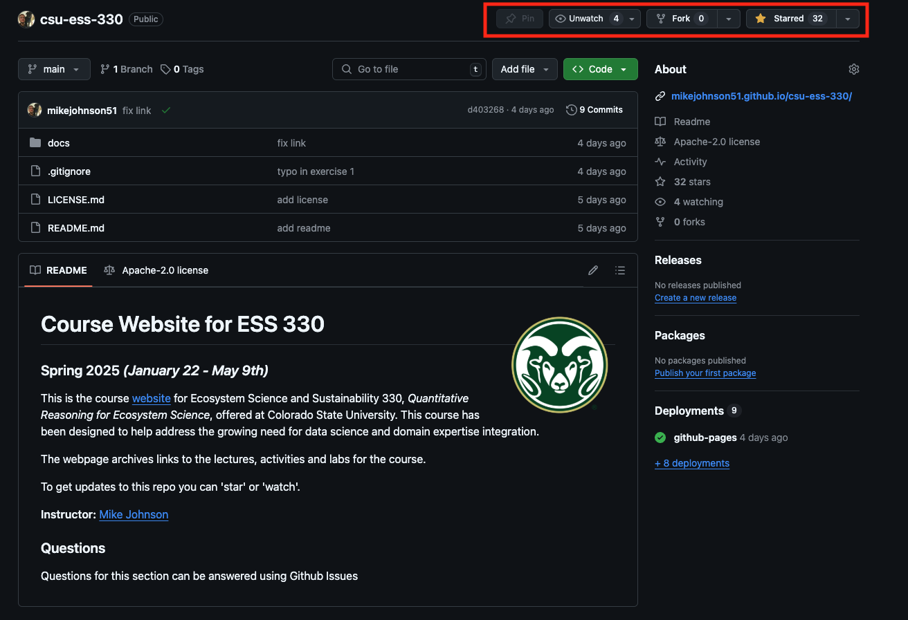
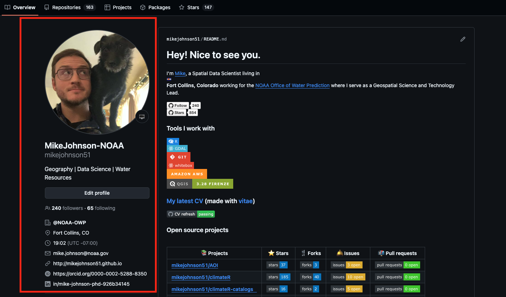

pwd/Users/mikejohnson/github/csu-ess-330/exercisesMeet Your Terminal, git, and Github
The terminal is a computer application. On a Mac, it is most frequently accessed via your Terminal application, and on Windows, through PowerShell. Fortunately, RStudio provides a built in terminal that imitates these applications within the RStudio IDE. The Terminal tab can be found next to the Console tab. If it is not visible, show it via Shift+Alt/Option+R (or Tools > Terminal > New Terminal). Once visible, it should look something like this:

In ESS330 we are only interested in using the terminal for speeding up basic tasks such as creating new files and folders, exploring folder structures, and seeing what it can teach us about our computer system. As such we will introduce only 6 common commands that are useful for navigating a file system and creating files.
Use tab to autocomplete paths!
pwd shows the directory or “folder” you are currently in.
pwd/Users/mikejohnson/github/csu-ess-330/exercisesls shows the files in the current working directory. This is equivalent to looking at the files in your Finder/Explorer/File Manager. Use ls -a to also list hidden files, such as .Rhistory and .git. Here we look at all the files in current working directory:
ls1-install-r.html
1-install-r.qmd
2-terminal.qmd
2-terminal.rmarkdown
csu-css.scss
footer-annotations.html
header.html
imagesmkdir creates a new directory (or folder) in the current working directory.
If we wanted to add a directory in that path, we could do so like:
mkdir my-folder
ls1-install-r.html
1-install-r.qmd
2-terminal.qmd
2-terminal.rmarkdown
csu-css.scss
footer-annotations.html
header.html
images
my-folderNotably we see our my-folder directory!
cd allows you to navigate through directories by changing working directory. There are many ways to navigate:
pwd # start here
cd my-folder
pwd # end here/Users/mikejohnson/github/csu-ess-330/exercises
/Users/mikejohnson/github/csu-ess-330/exercises/my-folderpwd
cd ..
pwd/Users/mikejohnson/github/csu-ess-330/exercises
/Users/mikejohnson/github/csu-ess-330pwd
cd ~
pwd/Users/mikejohnson/github/csu-ess-330/exercises
/Users/mikejohnsonpwd
cd /Users/mikejohnson/github/csu-ess-330
pwd/Users/mikejohnson/github/csu-ess-330/exercises
/Users/mikejohnson/github/csu-ess-330Windows uses a slightly different syntax with the slashes between the folder names reversed, , e.g. cd C:_USERNAME.
Pro tip 1: Dragging and dropping a file or folder into the terminal window will paste the absolute path into the window. Although this does not apply to the RStudio Terminal
Pro tip 2: Use the tab key to autocomplete unambiguous directory and file names. Hit tab twice to see all ambiguous options.
On a MacOS or Linux machine (anything running Bash) touch can be used to create a new file with a defined name and extension in the working directory. For example, we can create a new R file in our working directory as follows:
touch new-r-file.R
ls1-install-r.html
1-install-r.qmd
2-terminal.qmd
2-terminal.rmarkdown
csu-css.scss
footer-annotations.html
header.html
images
my-folder
new-r-file.ROn a Windows machine (anything running Powershell) $null > can be used to create a new file with a defined name and extension in the working directory. Essentially, this is piping no data (null) into a new file. For example, we can create a new R file in our working directory as follows:
$null > new-r-file.RclearNow we are going to use our terminal to find/install git. But what is git?
“Git is a free and open source, distributed, version control system designed to handle everything from small to very large projects with speed and efficiency.”
In your terminal, type the following (note: PC USERS type where git) and hit Enter.
If git is installed, it will return a path like below.
which git/usr/bin/gitYou may be prompted to install git automatically – do it! If you are not automatically prompted to install, continue to Step 2 to install manually.
If you have git installed, or it automatically installed, consider yourself fortunate and move to section 3. Otherwise…
You should only have to do this if git was NOT found in Step 1 !!!
Install the Xcode command line tools (not all of Xcode), which includes Git, by typing the following in your terminal:
xcode-select --installInstall Git for Windows, also known as “Git Bash”, to get Git and some other useful tools, such as the Bash shell.
‘Git for Windows’ places the Git executable in the conventional location, which will help you and other programs (like RStudio) find and use it.
When asked about “Adjusting your PATH environment”, make sure to select “Git from the command line and also from 3rd-party software”. Otherwise, accept the defaults unless you have specific reasons not to.
Once git is installed - restart RStudio and make sure that you can see the git pathway (which/where git) in the terminal. Once installed, continue to Step 3.
Once you have git installed, you can also type git --version (then press Enter) to see the version of git you have. Like this:
git --versiongit version 2.39.5 (Apple Git-154)Git Bash is an application for Windows environments which provides an emulation layer for a Git command line experience. Bash (or zsh) is default shell on Linux and macOS. Git Bash is a package that installs Bash, some common bash utilities, and Git on a Windows operating system. To use bash in R Studio, you can change the setting in your profile by going to Tools -> Global Options -> Terminal

If you change these settings, then you will be able to use the “Mac” commands above like touch.
GitHub provides a platform for hosting software developed using Git. It offers the version control functionality of Git, plus its own features. While Git is a command line tool, GitHub provides a Web-based graphical interface.
user.name and email wisely! Your user.name will appear on all websites we build, and will eventually become a “long-form” business card to advertise your work online.user.name will be used in the next steps so make sure to remember themGitHub is full of open source code that you can use, borrow, find, etc. To find your first repository search for mikejohnson51/csu-ess-330. This should take you to the repository for this course!

In the upper right hand corner you see three options:
Watching a repo can be nice, but for a class like this - which is updated every day - the notifications will be a lot.
For now, please star csu-ess-330 so that you can easily find it and I will have easy access to your accounts (you can always “unstar” after the course).
We will deal with forking repositories latter!
Now you have Git locally and you have a Github account that you’ve used to find published projects. Lets connect them…
The first thing we need to do is tell git who we are. Git comes with a tool called git config that lets us set the configuration variables that control how Git looks and operates.
In the RStudio Terminal, enter the following, where YOUR NAME is what you want git to know you by (this can be your user.name or real name)
git config --global user.name 'YOUR NAME'So what did we just do? We used the terminal to tell git (a local program) to set a global configuration variable, called user.name, to a specified value. Next, tell git the email associated with your GitHub account in the same way …
git config --global user.email 'Your Email Here'When you are done, you can list your global configuration variables:
git config --list --globaluser.name=mikejohnson51
user.email=mikecp11@gmail.com
credential.helper=osxkeychain
init.defaultbranch=mainSo long as your user.name and user.email are consistent with your entries you are doing great 👍!
Ok the last thing! This is a matter of convenience rather the necessity but we will create a local directory on our computers to house all git-enabled projects.
To do this, create a folder called github in the home directory of your computer. We can quickly do this by changing to our home directory (cd) and making a new folder (mkdir) called github:
cd ~
mkdir githubFor this assignment two things must be submitted:
git config --list --globalhttps://github.com/mikejohnson51Going to your link, should show something like this (image, info, and star count > 1)

These should be submitted on the Canvas dropbox.